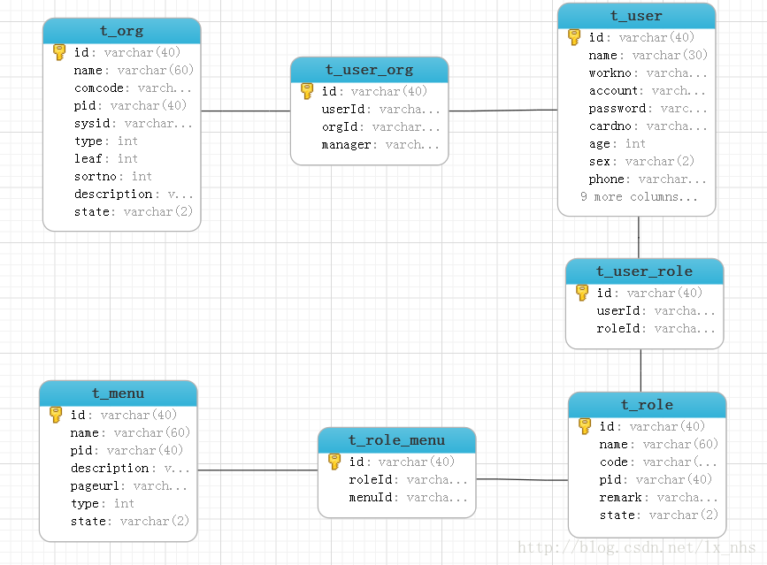
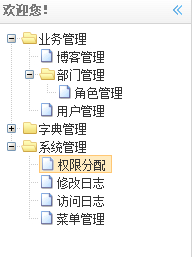
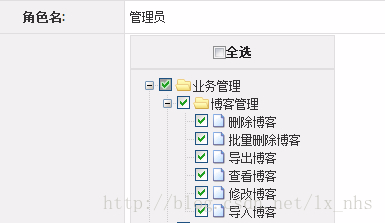
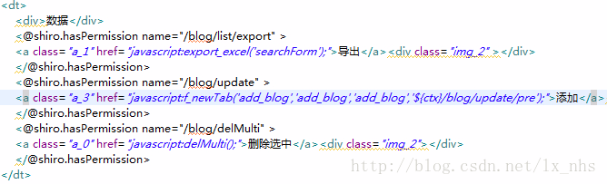

注:
所有shiro使用方法都是围绕springrain项目进行的. 具体的springrain项目demo可以在之前的博客中找到.
经典权限五张表指的是:
①用户表
②用户-角色表
③角色表
④角色权限表
⑤权限表
ER图:

t_org是部门表,考虑到员工兼职,所以有t_user_org 中间表.
t_menu是菜单表,字段 type 是标示是菜单资源还是普通资源 菜单资源的意义就是导航菜单,会显示到左侧导航,普通资源就是菜单内的按钮或者提交路径,这个时候 pid的意义就比较重要了,pid就是上级菜单的id,对于页面普通资源来说,就是相应的导航菜单的url,这样在管理界面能够树形显示出来.
用户正常登陆后,根据用户的角色查询角色拥有的菜单权限,通过树形菜单显示导航,示例效果图如下:

每个菜单下一般拥有增删改查导入导出等普通资源,这些也是有权限控制的,后台分配权限示例如下图:

图中 博客管理 是一个导航菜单,其中包含删除博客等动作的普通资源url. 通过 t_menu表中 type 字段进行标示菜单资源或者普通资源,pid字段标示这些普通资源属于 博客管理 这个菜单下.
删除,批量删除等其实就是前台操作的按钮,通过shiro的标签,可以控制按钮是否显示,shiro官方提供了jstl的标签库,springrain是使用了freemarker标签.
以博客管理为例代码截图如下:

就此 就能灵活分配和管理每个操作的权限.
对于通用的url拦截权限来说,这几张表足够用了.
出自weicms.net。
永久链接: http://www.weicms.net/2013/12/11/springrain2-basetable.html